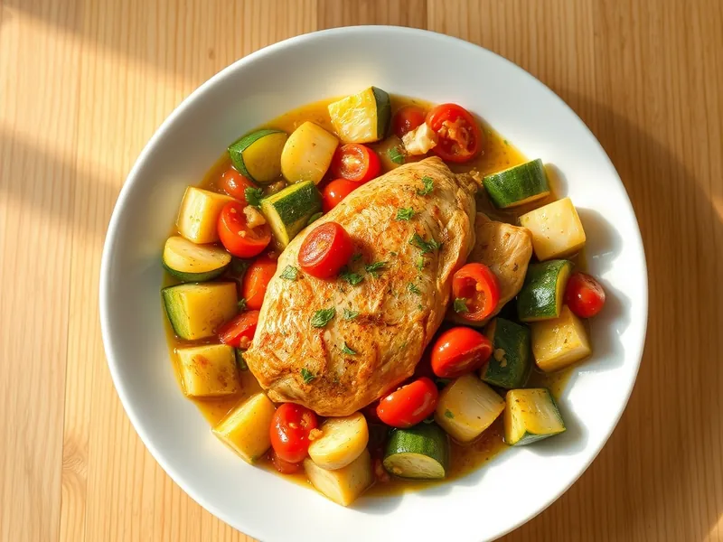

Фото: Иллюстрация ИИ, Cloudflare Workers AI
Курица с кабачками и помидорами на сковороде
Кусочки филе, тушённые с молодыми кабачками, помидорами и чесноком
30 мин3 порц.316 ккал на порциюБ 42 · Ж 10 · У 14Русская кухня
Открыть в приложении: порции, таймеры, список покупок
Продукты на 3 порц.
- Куриное филе500 г
- Кабачок1,5 шт
- Помидоры2 шт
- Лук репчатый1 шт
- Чеснок2 зуб.
- Растительное масло1,5 ст. л.
- Сушёные травы1 ч. л.
- Соль1 ч. л.
- Перец чёрный молотый2 щеп.
- Укроп по желаниюпо вкусу
Как готовить
- Нарежьте филе, кабачок и помидоры кубиком 2 см, лук полукольцами, чеснок порубите. Это 7 минут.
- Разогрейте масло на сильном огне и обжарьте курицу 5 минут до побеления.
- Добавьте лук, жарьте 2 минуты, затем кабачки - ещё 5 минут на среднем огне, помешивая.
- Положите помидоры, чеснок и травы, посолите и поперчите.
- Тушите под крышкой на слабом огне 8-10 минут, пока кабачки не станут мягкими, а помидоры не пустят сок. Посыпьте укропом.
Совет. Молодые кабачки чистить не нужно. Солите в конце: соль вытягивает из кабачков воду, и блюдо получится водянистым.